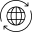

#1 La credibilidad de los medios
ARTICULO
RECURSOS
TERMINOLOGÍA
Noticias falsas y periodismo: recursos
Organizaciones e instituciones
Fake news initiative
First Draft
Post Truth Initiative
The Trust project
Artículos
Prensa
Albright, J.
Stop worrying about fake news. What comes next will be much worse.
The Guardian (9/12/16)
Elias, C.
Prensa en la era de la posverdad.
El Mundo (23/2/2018)
Forès, L.
Europa declara la guerra a les fake news.
Ara (16/1/2018)
Un manifiesto en contra de que el miedo a las fake news se use para el control político de los medios de comunicación.
Público. (13/12/2017)
 En la red
Burdeos, J.
Núvol. (9/03/2017)
Gray, R.
Lies, propaganda and fake news: a challenge of our age.
BBC (1/3/2017)
Hinojo, A.
Hacia una nueva ética informativa.
CCCBLAB (16/1/2018)
Libros
Manipulación de la información televisiva / Lorenzo Vilches. Paidós, 1989
La Realidad manipulada : radio, televisión, cine, prensa / Christian Doelker. Gustavo Gili, 1982
De source sûre : nouvelles rumeurs d'aujourd'hui / Véronique Campion-Vincent, Jean-Bruno Renard. Payot & Rivages, 2002
La Información del silencio : cómo se miente contando hechos verdaderos / Álex Grijelmo. Taurus, 2012
Trabajo realizado por Jabier Santamaria. Asignatura HTML y CSS